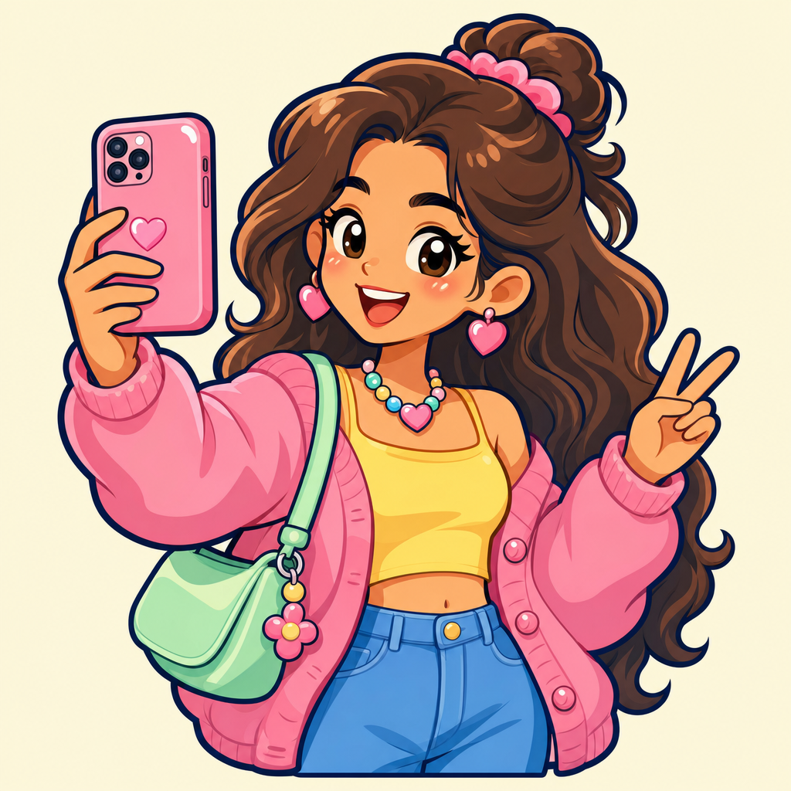
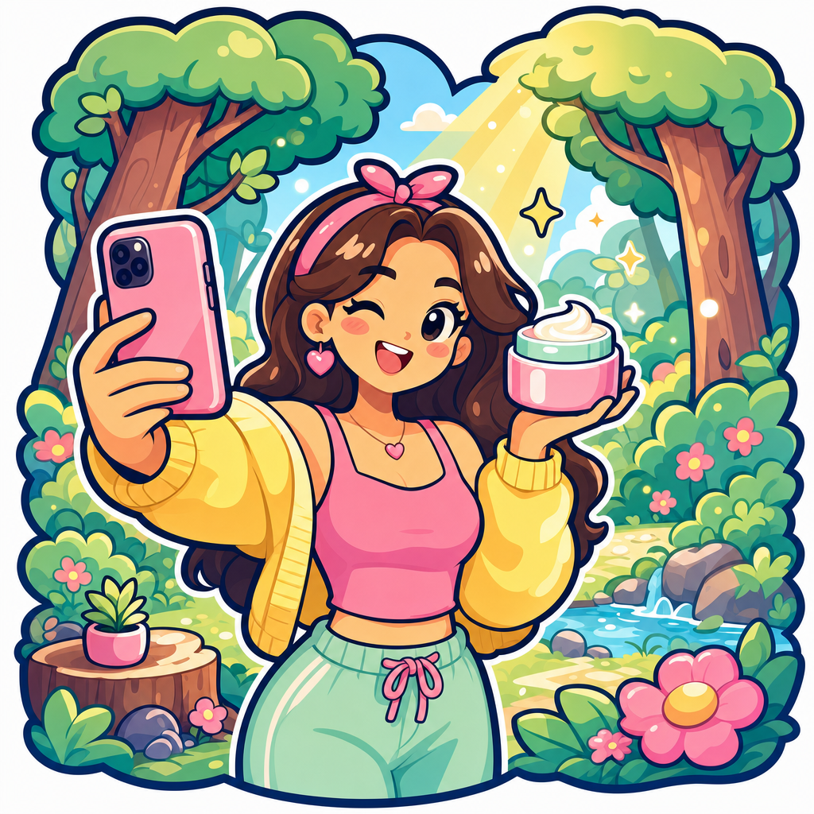
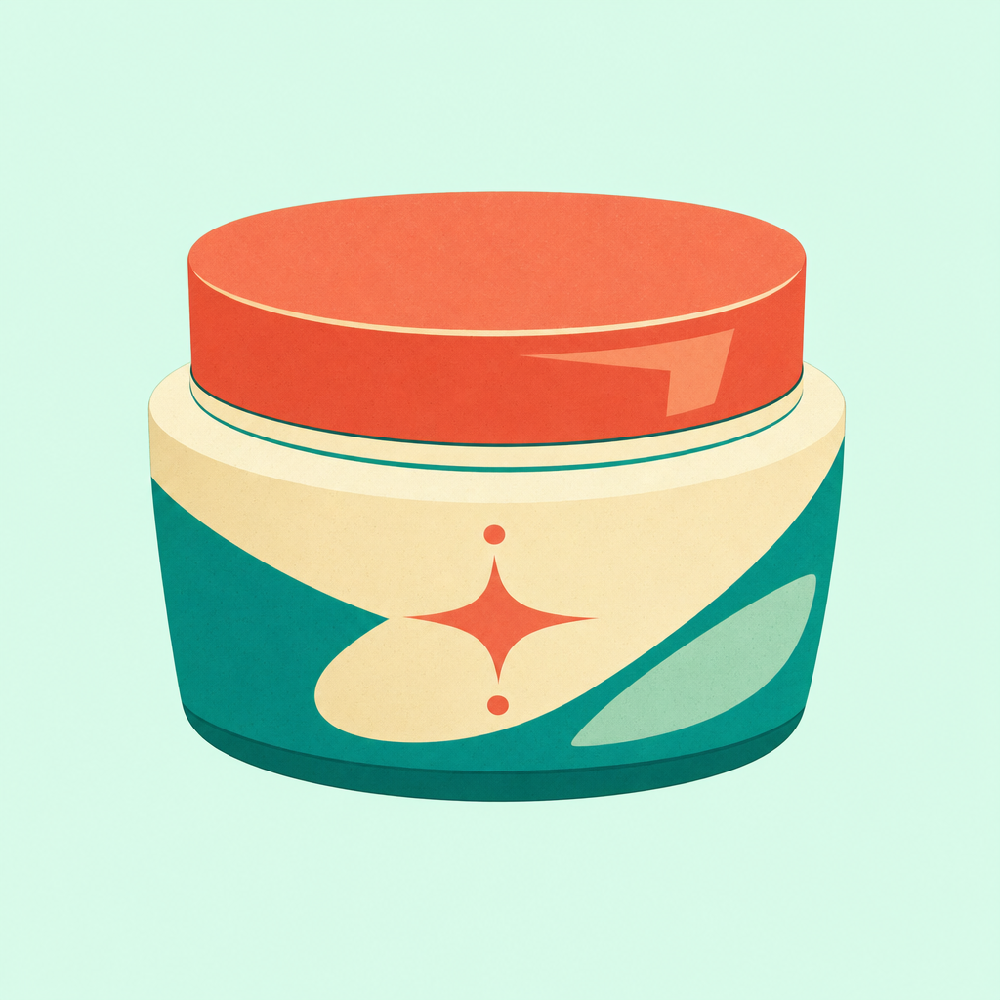
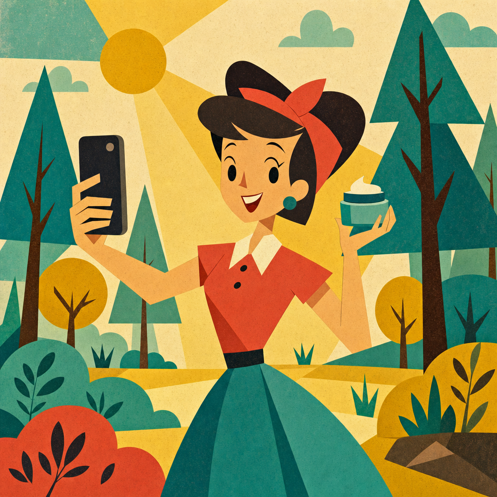
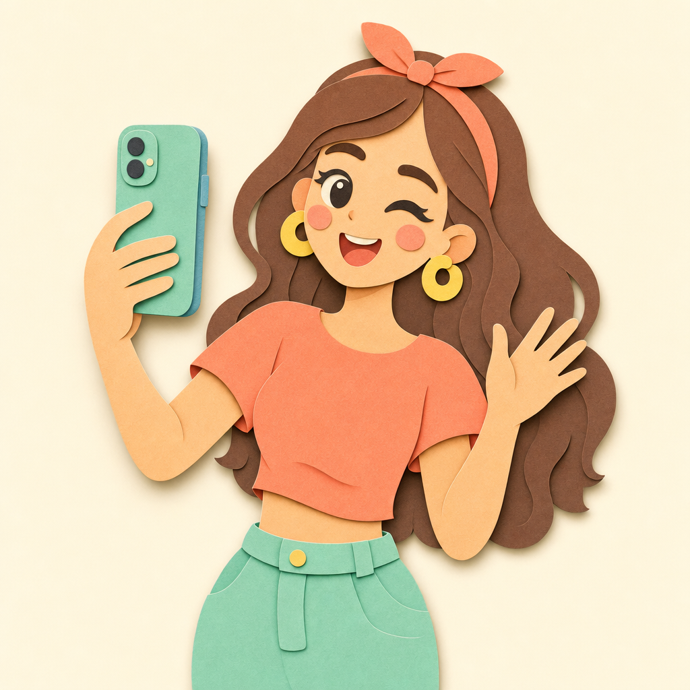
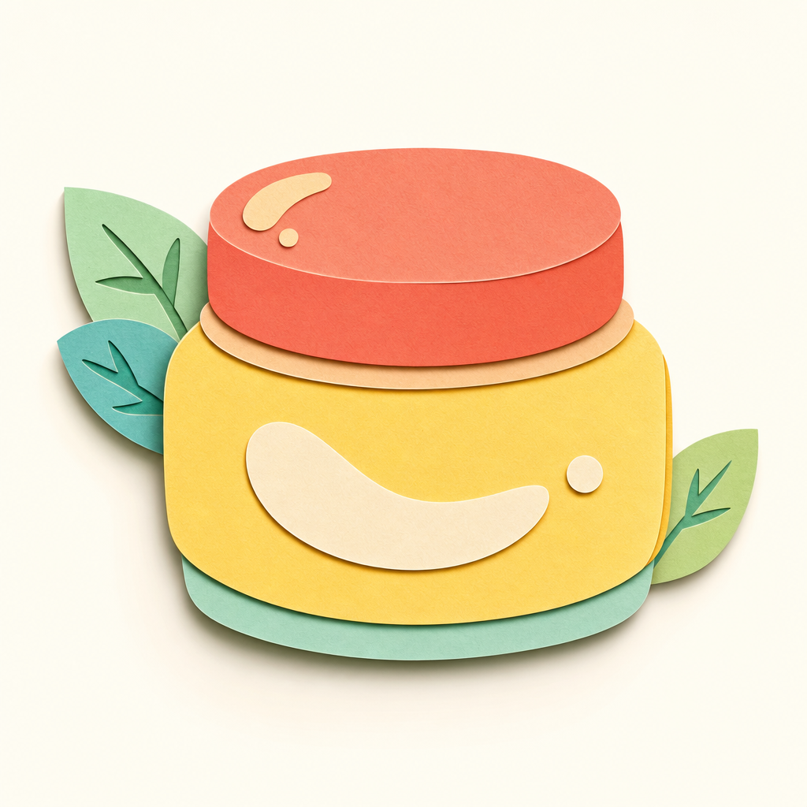
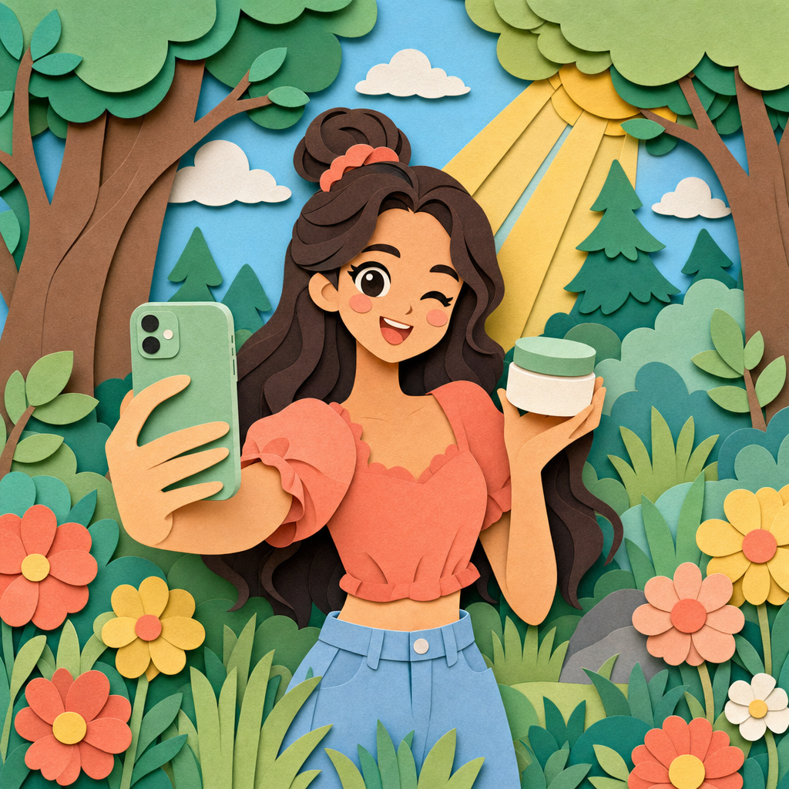

creator.png
Contact sheet for picking the game's single card-art style. One style wins; everything gets regenerated through its prompt "style bible". Click any image for full size (1024×1024).
The art style for all card art, fed by the layered art system (docs/design/brands-and-products.md §4): card visuals are composed from alpha-cut layers — setting + person cutout + product cutout — so a finite asset set yields combinatorial ad visuals. The winning style must therefore:







Judged from the actual pixels on disk against the layered art system (§4): (a) alpha-cutout / background-swap readiness, (b) style consistency between isolated subjects and the combo scene, (c) brief failures.
1. sticker-pop — cleanest cutout affordance in the batch (outline + pre-drawn die-cut border), best match to the chunky-cute light UI, and the tightest isolated↔combo consistency. The lowest-risk choice for the layered art system as designed.
2. upa-flat — the most distinctive and ownable look; flat shapes alpha-cut trivially. Pick it if distinctiveness outweighs the two caveats (outline-less edges on light settings, enforce "full silhouette inside frame" in the style bible).
paper-cutout is the conceptual soulmate of the layered system but needs a shadow-handling pipeline; park it as the stretch option. Regenerate midcentury-ad and cereal-mascot before a final ruling if completeness matters.